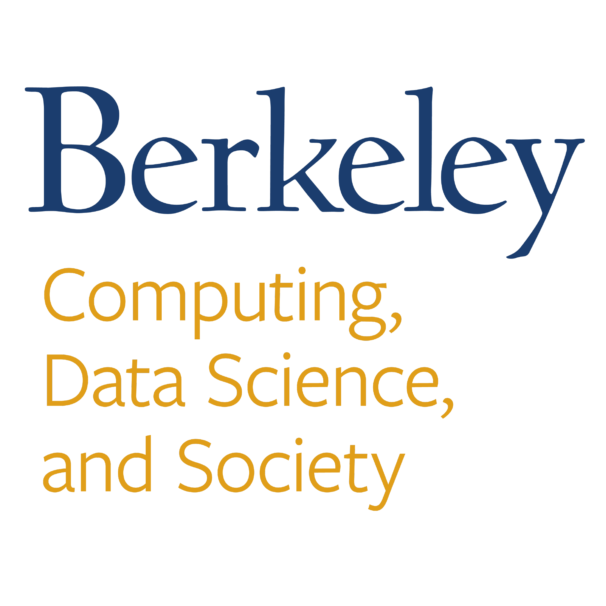

Education
University of California, Davis
2023 - 2024
M.S. Computer Science
- GPA: 4.0 / 4.0
- Research on Machine Learning and Static Ensemble Pruning
University of California, Berkeley
2019 - 2023
B.A. Computer Science
- GPA: 3.8 / 4.0
- Dean's List
B.A. Data Science
- GPA: 3.8 / 4.0
- Emphasis in Business and Industrial Analytics
Experience
Johns Hopkins Applied Physics Lab
Laurel, Maryland, United States
Computer Vision Engineer
June 2024 - Present
- Developed and finetuned integrated computer vision/natural language models that provided conversational scene understanding with real-time maritime video streams
- Prototyped high-accuracy ship classification computer vision models for images and videos
- Assisted in creating atmospheric weather prediction models for ship obfuscation
Nokia
Sunnyvale, California, United States
AI Engineering Intern
Jan 2024 - May 2024
Machine Learning Intern
May 2023 - Sep 2023
- Created machine learning models that learned the underlying data structure of any dataset and generated statistically-similar synthetic data, with support for numerical, categorical, ordinal, and timeseries data
- Designed all models (GAN, VAE, VQ-VAE) to be user customizable and generalizable for any dataset
- Packaged the models to be used in router error detection in Nokia Bell Labs
Berkeley Artificial Intelligence Research Lab
Berkeley, California, United States
Research Intern
Sep 2022 - Present
- Worked on the CIRCLES initiative to develop a smart cruise controller for self-driving cars to reduce traffic congestion and improve fuel efficiency using deep reinforcement learning
- Developed a dashboard to visualize live traffic data, vehicle positions, and optimal anticipatory speeds
- Synthesized vehicle-based and highway-overview data to increase traffic profile accuracy and optimal vehicle speed precision

UC Berkeley Division for Computing, Data Science, and Society
Berkeley, California, United States
Graphics, Visuals, and Software Intern
Aug 2020 - Jul 2022
- Designed & developed (with JavaScript) the assignment portfolio for "Statistics 24" to showcase how visual variables affected data visualizations
- Maintained 5+ official UC Berkeley websites by updating content & resolving technical difficulties
- Facilitated data science internship enrichment programs, advising sessions, and career workshops
Amazon Web Services
San Jose, California, United States
Software Engineer Intern
May 2022 - Aug 2022
- Deployed proof-of-concept A/B Testing and Feature Flagging software packages to measure and analyze the effectiveness of classification systems
- Prototyped Mturk (ML software division) software integration using AWS Lambda, API Gateway, and DynamoDB
- Designed application integration methods with AWS GRC2.0 user authentication tools
University of California, Berkeley
Berkeley, California, United States
Undergraduate Researcher
Jan 2021 - May 2022
- Analyzed Euroscepticism in 25 years of EU oversight documentation to quantify policymaking bias in contemporary European politics
- Refined & created text-categorization algorithms for machine learning classification systems using Python & NLP
Symmetry Electronics
San Francisco Bay Area
Engineering Intern
Mar 2019 - Jul 2019
- Symmetry Electronics is a subsidiary of Berkshire Hathaway and is a global semiconductor distributor
- Collaborated with management to streamline assembly code transfer onto 2000 data transmission modules
- Troubleshot faulty chips by running diagnostics & interpreting hardware signals to ensure proper wireless communication
Teaching
UC Davis Electrical and Computer Engineering
Davis, California, United States
TA, Introduction to Programming & Problem Solving
Apr 2024 - Jun 2024
TA, Computer Organization & Machine-Dependent Programming
Jan 2024 - Mar 2024
TA, Programming & Problem Solving
Oct 2023 - Dec 2023
UC Berkeley Division for Computing, Data Science, and Society
Berkeley, California, United States
TA, Introduction to Data Science
Aug 2022 - June 2023
- Led lab sections twice weekly in Python fundamentals, data visualization, and machine learning
- Advised students in good programming practices & statistical comprehension during weekly office hours
- Counselled students in accomplishing academic goals by promoting inclusivity and advising them in their pursuit for higher domain knowledge
Tutor, Introduction to Data Science
June 2021 - June 2022
Organizations and Service
Upsilon Pi Epsilon
General Member
Jan 2021 - Present
UC Berkeley College of Engineering
Academic Intern, Data Structures
Jan 2021 - Aug 2021
Academic Intern, Computer Programs
Jan 2021 May 2021
UC Berkeley Division for Computing, Data Science, and Society
Academic Intern, Introduction to Data Science
Aug 2021 - June 2022
Computer Science Mentors
Mentor, Discrete Mathematics
Jan 2021 - Aug 2021
Asian American Association
Senior Advisor
Jan 2023 - June 2023
President
May 2022 - Dec 2022
Director of Finance
Aug 2021 - May 2022
Design Chair
Aug 2021 - Dec 2021
Awards and Mentions
Speech and Debate
- 2019: 19th in California — Program Oral Interpretation
- 2019: 9th Place at CFL State Qualifying Tournamen — Original Advocacy
- 2019: Quarter Finalist at 2019 CAL Invitational — Program Oral Interpretation
- 2018: 3rd alternate (6th Place) in the National Qualifying Tournament — Program Oral Interpretation
- 2018: Quarter Finalist at 2018 CAL Invitational — Program Oral Interpretation
- 2018: Champion at Stephen Steward Middle and High School Invitational — Original Prose Poetry
- 2017: Champion at CFL Speech 2 Cupertino — Thematic Interpretation
Skills
Languages
- Java
- Python
- C
- JavaScript
- SQL
- C#
- Assembly
- HTML
- CSS & SCSS
- React.JS
- Node.JS
- PHP
- GoLang (Go)
- Risc-V
- LateX
Frameworks and Tools
- AWS Lambda
- AWS API Gateway
- AWS DynamoDB
- AWS Identity And Access Management (IAM)
- AWS Config
- NumPy
- Pandas
- Pytorch
- FastAI
- Scikit-learn
- Tensorflow
- Data Structures and Algorithms
- MySQL
- NoSQL
- Open API
- Git
- Regex
- Seaborn & Matplotlib
- LangDetect
- Figma
- Adobe Suite
- Microsoft Suite
- Tableau
- Jupyter Notebook
- Adobe Creative Cloud